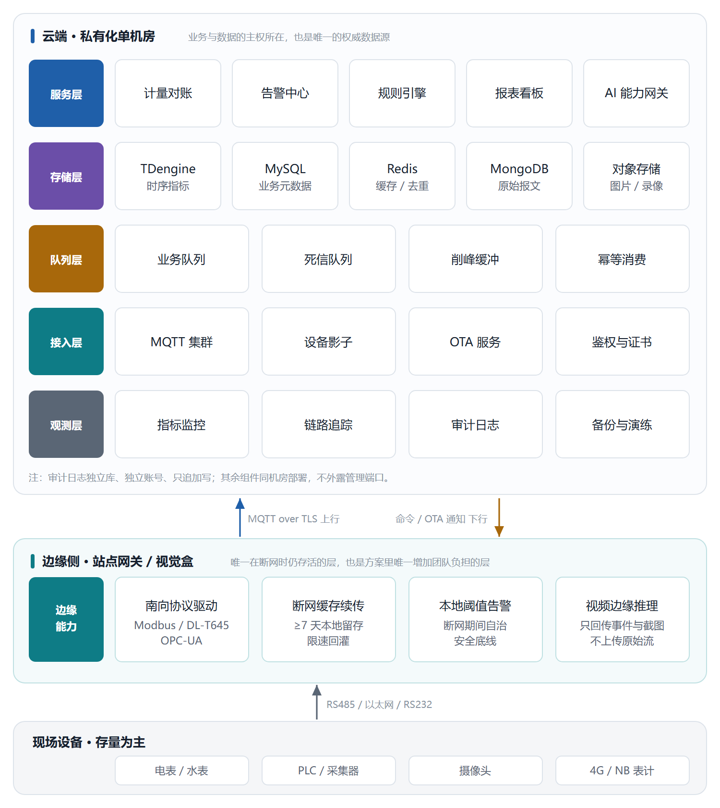
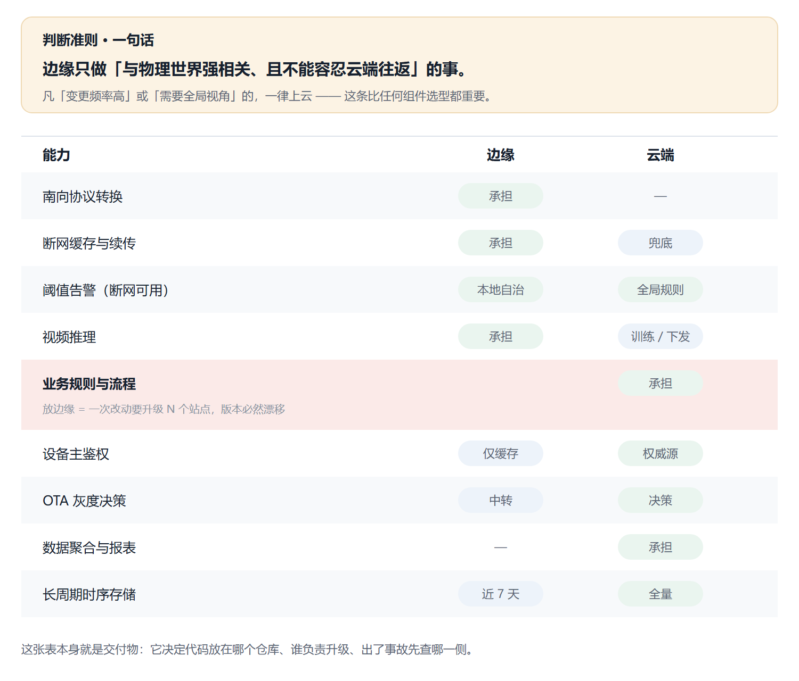
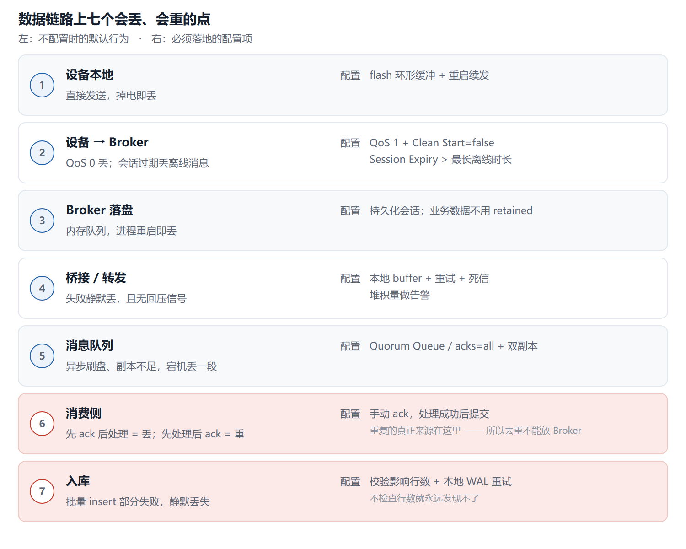
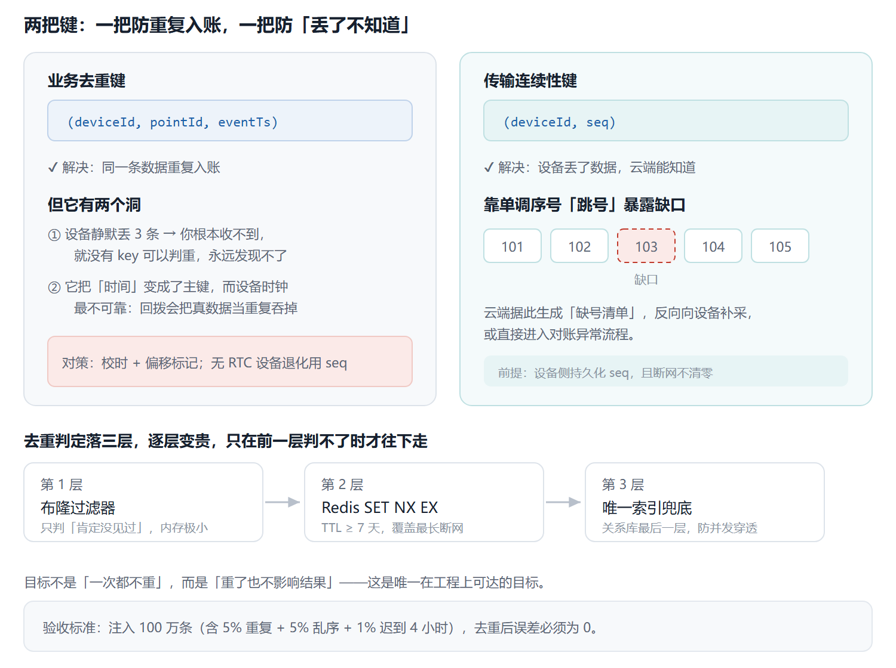
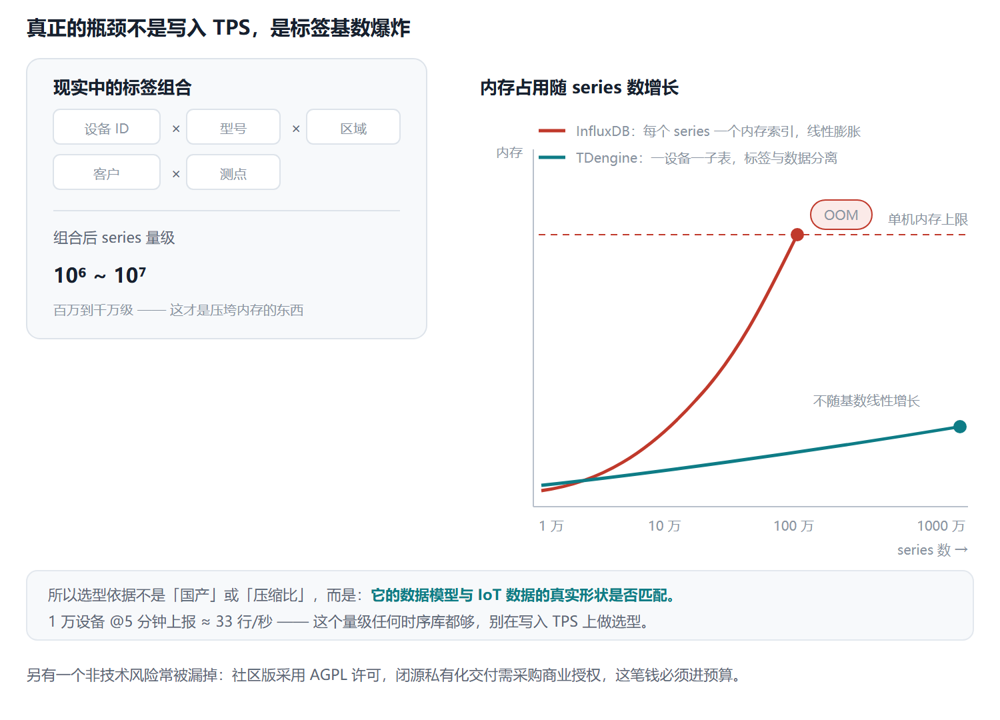
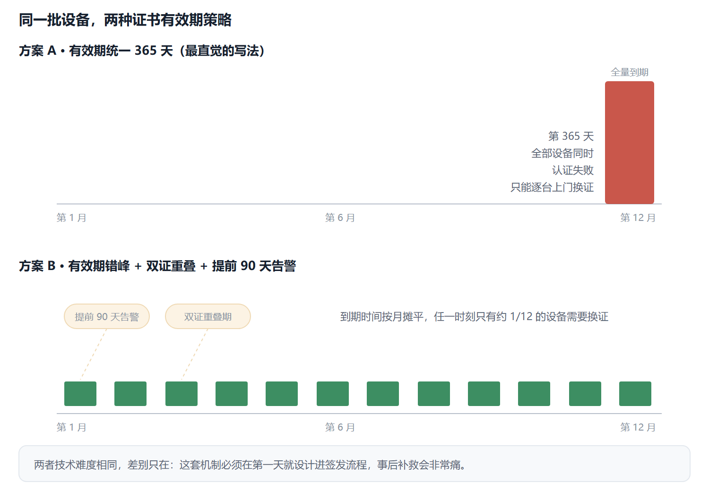
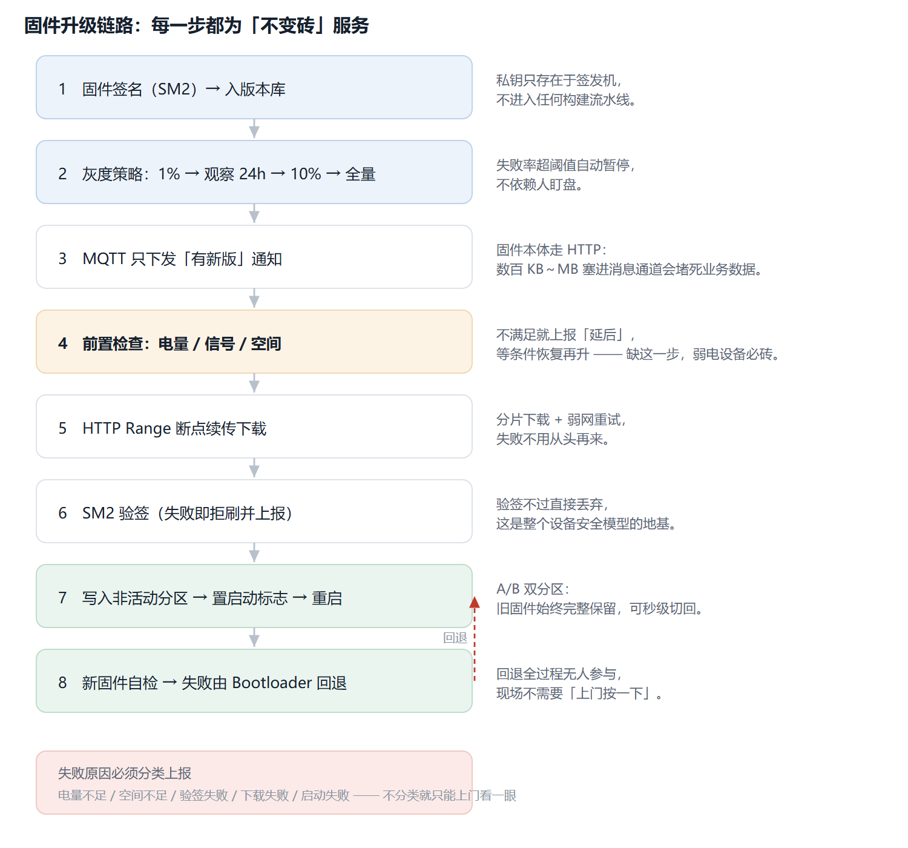
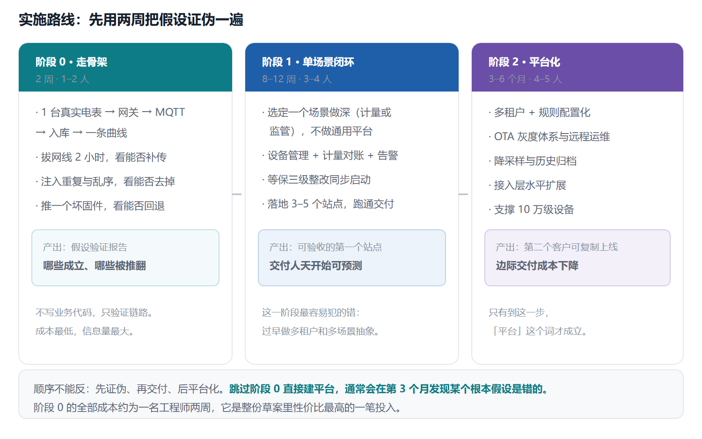

定位：不是一份组件清单，而是五个决策各自挖到「碰到标准 / 物理 / 钱」为止。每个决策统一七段：原始约束 → 备选与否决 → 量化对比 → FMEA → 可证伪预测 → 验证方法 → 决策与代价。
阅读顺序建议：D1 边云切分 → D2 不丢语义 → D3 时序选型 → D4 安全合规 → D5 OTA，D6 与后三节是落地与成本，按需查阅。凡不确定处标「待查证」，不编数字。
五个决策
| # | 决策 | 一句话结论 |
|---|---|---|
| D1 | 接入层形态与边云职责切分 | 边云协同；边缘只做"与物理世界强相关且不能容忍云端往返"的事 |
| D2 | 端到端数据不丢语义 | at-least-once + 幂等去重；端到端 exactly-once 不存在 |
| D3 | 时序存储选型 | TDengine；真坑不是写入 TPS，是标签基数爆炸 |
| D4 | 安全与合规基线 | 等保三级 + 国密；证书批量过期是最大隐性事故 |
| D5 | OTA | 签名 + 灰度 + A/B + 前置检查；变砖一次 = 客户信任归零 |

D1 · 接入层形态与边云职责切分
① 原始约束
| 约束 | 事实 | 硬性影响 |
|---|---|---|
| 存量设备协议 | 能源现场大量 DL/T 645-2007、Modbus RTU（RS485），无 IP 栈 |
设备不可能直连云，必须有南向转换 |
| 低功耗设备 | NB-IoT 工作在 PSM/eDRX，长连接 keepalive 会打干电池 | MQTT 长连接不适用，需 CoAP/HTTP 短连接 |
| 视频 | 机器视觉是核心卖点；一路 1080p H.264 ≈ 2–4 Mbps | 全量上云带宽不可承受 |
| 团队 | 3–5 人，无专职嵌入式（假设） | 边缘侧复杂度必须极低 |
| 部署 | To G 客户内网私有化，可能无公网出口 | 边缘必须能独立存活 |
| 生态 | 华为 Atlas 500 / IEF / HiLens 可使用（待确认商务关系） | 视觉场景可借力，不自研 |
| 存量现实（2026 行业口径） | 约 70% 已安装工控资产服役超 15 年，PLC 多为"不可改动"的既有资产 | 架构必须走 Brownfield 路线：不动 PLC，靠边缘网关桥接 + 夹具式加装传感器 |
② 备选方案与否决理由
| 方案 | 描述 | 优点 | 否决理由 |
|---|---|---|---|
| A 纯云直连 | 设备 → 云 MQTT | 架构最简单 | ❌ 存量 RS485 接不了；视频带宽不可行；断网即丢 |
| B 全边缘自治 | 边缘独立跑全部业务 | 断网完全可用 | ❌ 多站点运维爆炸；数据无法汇聚；升级地狱（N 个站点版本漂移） |
| C 哑管道边缘 | 边缘只做透传，不缓存不推理 | 边缘超简单 | ❌ 无法断网续传、无法边缘告警，等于方案 A |
| D 边云协同 | 边缘做协议转换+缓存+推理；云做业务+汇聚+AI 训练 | 覆盖存量、断网可用、带宽可控 | ✅ 采纳，代价是多一层软件与运维 |
③ 边云职责切分（本节核心）
判断准则（一句话）：
边缘只做"与物理世界强相关、且不能容忍云端往返"的事。凡"变更频率高"或"需要全局视角"的，一律上云。
| 能力 | 边缘 | 云 | 切分理由 |
|---|---|---|---|
| 南向协议转换 | ✅ | ❌ | 设备物理上连在边缘 |
| 数据缓存续传 | ✅ | 兜底 | 断网时云不可达，边缘是唯一存身之处 |
| 阈值告警 | ✅ 本地自治 | ✅ 全局规则 | 断网时也必须能报警（安全底线） |
| 视频推理 | ✅ | 训练/模型下发 | 带宽约束 |
| 业务规则/流程 | ❌ | ✅ | 变更频繁——放边缘意味着 N 个站点依次升级 |
| 设备主鉴权 | 本地缓存 | ✅ 权威 | 云是唯一可信源，边缘只缓存凭据 |
| OTA 决策 | 中转 | ✅ 决策 | 灰度策略需全局视角 |
| 数据聚合/报表 | ❌ | ✅ | 需跨站点全局视角 |
| 时序存储 | 短周期本地 | ✅ 长期 | 边缘只留最近 N 天 |
这张表本身就是交付物——它决定了代码放哪里、谁升级、出了事故找谁。

③-补 语义层与标准链路
上表只写了"南向协议转换"，但转换成什么必须说清楚，否则每个消费方都要自己重新理解点位，集成成本会随站点数线性膨胀。2026 年工业界的主流做法是一条标准链路：
现场层（不动） Modbus RTU / DL-T 645 / PROFINET / 老 PLC 寄存器
│ 边缘网关用原生驱动读取（Kepware / Ignition Edge / 自研插件）
▼
语义桥接层 边缘网关跑 OPC UA Server，把寄存器包装成带类型/单位/时间戳/质量码的信息模型
│ 北向统一出口
▼
传输层 MQTT + Sparkplug B（状态化消息：出生证明/死亡证明/心跳），broker 置于工业 DMZ
│ 一处发布、多处订阅（UNS 统一命名空间）
▼
消费层 时序库 / 数字孪生 / MES / ERP / 看板，各订阅自己的 topic，不做点对点对接
为什么这样选（选型判据，不是跟风）：
| 决策 | 选它 | 不选它 | 理由 |
|---|---|---|---|
| 语义建模 | OPC UA | 裸 MQTT topic + JSON blob | OPC UA 自带类型、工程单位、质量码与可浏览节点树，是数字孪生与审计的基础；裸 JSON 每个消费方都要人工映射 |
| 广域传输 | MQTT Sparkplug B | OPC UA 跨 WAN 轮询 | Sparkplug 头部仅 2 字节、broker 托管扇出，线性扩到百万端点；OPC UA C/S 轮询在万点以上连接开销爆炸 |
| 集成拓扑 | UNS 统一命名空间 | 点对点 SCADA | 新增一个消费方 = 订阅已有 topic，从数周降到数小时；行业报告集成开销降 30%–50% |
| 老旧设备 | 夹具式加装传感器 | 改造/更换 PLC | 振动、温度、电流互感器外挂即可拿约 80% 的分析价值，且不触碰控制器，OT 侧阻力最小 |
物模型 / 设备影子是边云之间的语义契约：设备状态、告警、能耗统一成 JSON Schema（与 §D3 的时序表结构解耦），断网期间边缘持有影子、云端持有期望态，恢复后按状态差异同步。这一层不做，后面每接一类设备都要重写一遍解析器。
诚实的边界：如果客户全是新型 4G/MQTT 设备、无视频、无存量 RS485，这条语义桥接层可以砍掉（回到 D1 ⑦ 的"边缘可裁"判断）。所以设备清单与协议占比仍是第一个要问清的问题（已列入待查证）。
④ FMEA
| 失效模式 | 影响 | S | O | D | RPN | 措施 |
|---|---|---|---|---|---|---|
| 边缘设备被替换/拆走 | 身份伪造、数据投毒 | 9 | 5 | 7 | 315 | 边缘证书 + 设备绑定 + 异常行为检测 |
| 边缘程序升级失败 | 整站失联 | 8 | 5 | 5 | 200 | A/B 分区 + 远程回滚 + 心跳超时自动降级旧版 |
| 边缘缓存盘满 | 新数据无法缓存→丢 | 8 | 6 | 4 | 192 | 优先级淘汰（关键数据最后淘汰）+ 容量告警 |
| 边缘时钟漂移 | 时间戳错乱→去重失效 | 7 | 6 | 6 | 252 | 定期与云端校时 |
| 南向驱动解析异常 | 数据错乱或丢弃 | 7 | 5 | 6 | 210 | 驱动插件化 + 原始报文留档可回放 |
⑤ 可证伪预测
- 若把业务规则放边缘，一次规则变更需要 N 个站点依次升级，交付周期从"1 天"变成"2 周以上"，且必然出现版本漂移。
- 若边缘不做本地阈值告警（只依赖云端），断网期间客户现场的安全告警将完全失效——这在监管类项目中是验收不通过的。
- 若边缘不做缓存，断网 30 分钟即产生不可恢复的数据缺口（可由 D2 的注入实验验证）。
⑥ 验证方法
| 验证 | 方法 | 通过标准 |
|---|---|---|
| 断网自治 | 拔掉边缘上行网线 2h | 本地告警正常触发；恢复后数据完整回灌 |
| 边缘回滚 | 推送一个故意损坏的固件 | 自动/手动回滚成功，站点恢复在线 < 10min |
| 南向兼容 | 接入 3 种真实存量设备（电表/PLC/传感器） | 解析成功率 100%，原始报文可回放 |
⑦ 决策与代价
决策：采纳 D（边云协同），边缘能力收敛为协议转换 + 缓存续传 + 本地告警 + 视频推理四件事。
代价 | 代价 | 量化 | |---|---| | 自研边缘网关 MVP | ≈ 1 人月（若客户已有工控机可零硬件成本） | | 每种南向协议驱动 | 2–3 人周（可外采现成工业网关规避） | | 边缘硬件 BOM | 网关 600–1500 元/台；视觉盒 2000–8000 元/路 | | 运维复杂度 | 从"1 个云环境"变为"N 个站点 × 1 个云"，需远程运维体系（见 D5） |
诚实说明：边缘层是这个方案里唯一增加团队负担的部分。如果客户设备全是新型 4G/MQTT 设备且无视频，边缘可以砍掉——所以这是必须问清设备清单才能定的事（见 §待补充信息）。
D2 · 端到端数据不丢语义（摘要）
① 原始约束
计量数据用于结算对账，缺一条即账不平；招标常写"完整率 ≥ 99.9%"，与"计量不丢"存在语义冲突，必须当场澄清。
② 语义结论（本决策的分水岭）
端到端 Exactly-once 在 IoT 多跳异步架构中物理上不存在。 正确目标 = At-least-once 传输 + 幂等去重 = 逻辑 Exactly-once。 MQTT QoS 1 只是 at-least-once；QoS 2 的 exactly-once 仅限 client↔broker，跨 bridge 即退化。
③ 七个会丢/会重的点
| # | 环节 | 默认行为下的失效 | 必须的配置 |
|---|---|---|---|
| ① | 设备本地 | 直接发，掉电即丢 | flash ring buffer |
| ② | 设备→Broker | QoS 0 丢；session 过期丢离线消息 | QoS 1 + Clean Start=false + Session Expiry > 最长离线 |
| ③ | Broker 落盘 | 内存队列，重启丢 | 持久化会话（不用 retained 存业务数据） |
| ④ | Bridge | 失败静默丢、无回压 | buffer + 重试 + DLQ + 堆积监控 |
| ⑤ | MQ 持久化 | 异步刷盘 / 副本不足 | Quorum Queue / acks=all+min.insync=2+RF3 |
| ⑥ | 消费 | 先 ack 后处理=丢；先处理后 ack=重 | 手动 ack，成功后再 ack（重复由 ④ 去重消化） |
| ⑦ | 入库 | 批量 insert 部分失败静默丢 | 校验影响行数 + 本地 WAL 重试 + 日终对账 |

两个最容易被忽略的：⑥ 重复的真正来源在消费侧（所以去重不能放 broker）；⑦ 批量入库部分失败会静默丢（不检查影响行数就发现不了）。
④ 去重键设计
业务去重键 = (deviceId, pointId, eventTs) → 防"重复入账"
传输连续性键 = (deviceId, seq) → 防"丢了不知道"
- 只用去重键有盲区：设备静默丢 3 条，云端收不到就没有 key 可判，永远发现不了。必须靠 seq 跳号。
- 去重键的软肋：它把"时间"这个最不可靠的东西变成主键。时钟快 → 重复入账；时钟回拨 → 真数据被当重复吞掉。必须校时 + 偏移标记 + 无 RTC 设备退化用 seq。
- 存储三层：Redis 布隆（仅判"肯定没见过"）+ Redis
SET NX EX（TTL ≥ 7 天）+ MySQL 唯一索引兜底；TDengine 同时间戳行为⚠️待查证。

⑤ 乱序（比丢更隐蔽）
补传导致到达序 ≠ 事件序 → 时序错乱、告警误判（先收到恢复再收到超限）、聚合错。对策：告警与聚合一律基于 event time + watermark，不用 processing time。
⑥ 补传风暴（可算）
正常：1000 台 × 5min = 3.3 msg/s
断网 2h 积压 24,000 条 → 同恢复瞬间 ≈ 2,400 msg/s = 正常的 720 倍
→ EMQX 队列逼近上限 → 流控 → 正常设备被踢 → 看起来像"大面积离线"
对策：网关层令牌桶限速（≤20 msg/s）是核心——限流不能做在 broker，因为 broker 的限流手段是"丢弃"，直接违背不丢目标。辅以随机抖动 0–300s 错峰 + 关键数据优先分级补传。
⑦ FMEA（摘要，RPN>200 必整改）
设备无本地缓存 504 · 批量入库静默丢 320 · 时钟不准 294 · Bridge 无重试 256 · 消费先 ack 252 · Broker 队列溢出 240 · 补传风暴 147 · 去重 TTL 过短 120
⑧ 可证伪预测
- 不做网关限速 → 1000 台断网 2h 同恢复，30s 内队列逼近上限，正常设备 P99 劣化 > 1s
- 时钟偏移 > 上报周期 1/2 → 去重出现"反向错误"（真数据被吞），误判率非线性上升
- 只做去重键不做 seq → 设备静默丢 3 条永远无法发现
- 去重 TTL 设 1h → 断网 4h 补传的重复数据全部入账
⑨ 验证
注入 100 万条含 5% 重复 + 5% 乱序 + 1% 迟到 4h 的数据 → 去重后误差必须为 0；netem 注入 20% 丢包验证续传完整率 100%；kill -9 消费者验证不丢。
⑩ 代价与取舍
带宽月增 3–5 GB（可忽略）；补传从秒级变分钟级（必须提前告知甲方）；复杂度 2–3 人周；Redis 去重表 ~600MB。
一句话取舍：牺牲补传时效性，换数据完整性——迟到 10 分钟的数据，远好过丢掉的数据。
D3 · 时序存储选型对比
① 原始约束
| 约束 | 事实 | 影响 |
|---|---|---|
| 数据特征 | 写多读少，按时间范围聚合查询 | 需列式 + 时间索引 |
| 保留期 | 原始 3 个月，降采样后 1–3 年 | 必须有降采样机制 |
| 国产化 | 政企项目常要求国产软件 | 显著加权国产品 |
| 团队 | 3–5 人，无专职 DBA | 运维复杂度必须低 |
| 交付形态 | 闭源商业交付（私有化） | AGPL 传染性风险必须评估 |
② 候选横向对比
| 方案 | 类型 | 许可 | 国产 | 压缩比 | 运维复杂度 | 高基数容忍 | 备注 |
|---|---|---|---|---|---|---|---|
| TDengine | 专用时序 | AGPL / 商业 | ✅ | 10–20× | 低（单机可撑） | 高（一设备一子表） | 采纳 |
| InfluxDB | 专用时序 | MIT(1.x)/商业(2.x+) | ❌ | 5–10× | 中 | 低（高基数坟场） | 否决 |
| TimescaleDB | PG 扩展 | Apache2(社区) | ❌ | PG 原生 | 中（要会 PG 调优） | 中 | 备选 |
| IoTDB | 专用时序 | Apache2 | ✅ | 高 | 中 | 高 | 备选 |
| ClickHouse | OLAP | Apache2 | ❌ | 极高 | 高（运维重） | 高 | 否决（团队负担） |
| MySQL 分表 | 关系库 | — | — | 差 | 低 | 低 | 否决（查询慢、膨胀快） |
③ 量化对比（关键：算清拐点）
存储估算（1 万设备 / 5min / 300B）
原始日增 = 10,000 × 288 条/天 × 300B ≈ 864 MB/天 ≈ 315 GB/年
TDengine 压缩 10–20× → 16–32 GB/年
InfluxDB 压缩 5–10× → 32–63 GB/年
MySQL 无压缩 + 索引 → 400 GB+/年，且需分表
→ 1 万设备下存储成本可以忽略，不构成选型依据。
写入量
1 万设备 @5min ≈ 33 行/秒
10 万设备 @1min ≈ 1,667 行/秒
→ TDengine 单机官方标称可达百万级点/秒。写入量同样不构成瓶颈。
真正的瓶颈在哪（本决策的深度所在）
IoT 时序选型的真坑不是写入 TPS，是「标签基数（cardinality）爆炸」。
现实数据模型：设备 ID × 产品型号 × 区域 × 客户 × 测点类型 —— 组合后标签基数可达百万到千万级。
| 方案 | 高基数下的表现 |
|---|---|
| InfluxDB | 每个 series 需在内存维护索引；百万级 series 会导致 OOM（社区大量真实案例）。这是它的结构性缺陷 |
| TDengine | 采用「一个设备一张子表」模型，子表数量可达百万级，标签（超级表 tag）与数据分离存储。天然规避高基数问题 |
| TimescaleDB | 依赖 PG 分区，标签基数高时索引膨胀 |
| ClickHouse | 能扛，但需要精心设计排序键 + 运维重 |
这就是为什么选 TDengine 不是因为"国产"或"压缩好"，而是因为它的数据模型与 IoT 的现实形状匹配。

④ 备选与否决理由
- ❌ InfluxDB：高基数 OOM 风险 + 2.x 后商业许可 + 非国产
- ❌ ClickHouse：运维负担超出 3–5 人团队能力（需 ZooKeeper/Keeper、分区管理、合并调优）
- ⚠️ TimescaleDB：若团队已有强 PG 能力可选，否则不占优
- ✅ TDengine：一设备一子表 + 类 SQL + 单机可撑 + 国产
⑤ FMEA
| 失效模式 | 影响 | S | O | D | RPN | 措施 |
|---|---|---|---|---|---|---|
| AGPL 许可违规（闭源交付未购商业授权） | 法律风险，可能被要求开源 | 9 | 6 | 7 | 378 | 交付前必须采购商业 license 或法务确认 |
| 子表数无上限增长 | 元数据膨胀、启动慢 | 7 | 6 | 5 | 210 | 子表生命周期管理 + 归档删除 |
| 未做降采样 | 存储与查询双爆 | 7 | 7 | 3 | 147 | 连续查询/流计算自动降采样 |
| 跨设备大范围聚合查询 | 查询超时 | 6 | 6 | 4 | 144 | 预聚合物化表 + 查询超时保护 |
| 单机无副本 | 磁盘故障即全丢 | 9 | 3 | 4 | 108 | 3 副本 vgroup（或每日备份 + 快速重建） |
RPN 最高的一项是 AGPL 许可风险，不是技术风险。 这是做过商业交付的人才会第一时间想到的事：TDengine 社区版是 AGPL，闭源私有化交付必须买商业授权，这笔钱要进 TCO。
⑥ 可证伪预测
- 若设备数 > 50 万且不做降采样，跨设备时间范围聚合查询的 P95 会超过 5s，必须引入预聚合表或集群。
- 若把
deviceId设计成 InfluxDB 的 tag，10 万设备规模下内存会 OOM——这是选型对比中可直接实验验证的差异。 - 若子表不做归档删除，3 年后元数据量会让
SHOW STABLES类操作显著变慢。
⑦ 验证方法
| 验证 | 工具 | 通过标准 |
|---|---|---|
| 写入吞吐 | taosBenchmark（官方） |
达到目标行/秒时 P99 写入延迟 < 50ms |
| 聚合查询 | 构造 10 万子表 × 1 年数据 | 常用聚合 P95 < 1s |
| 压缩比实测 | 真实报文数据集 | 压缩比 ≥ 8× |
| 高基数对比 | 同数据集灌 InfluxDB 对比内存 | 形成对比报告（选型证据） |
⑧ 决策与代价
决策：TDengine（3 副本 vgroup），MySQL 仅存业务元数据，Redis 缓存，MongoDB 存原始报文，华为 OBS 存图片视频。
代价
| 代价 | 说明 |
|---|---|
| AGPL 商业授权费 | 闭源交付必买，⚠️待询价，必须进 TCO |
| 团队学习成本 | TDengine SQL 有方言（超级表/子表/连续查询），约 1–2 人周 |
| 生态较小 | Grafana 数据源有，但社区插件不如 InfluxDB 丰富 |
| 运维多一个组件 | 但单机形态简单，集群形态才复杂 |
D4 · 安全与合规基线
① 原始约束
| 约束 | 事实 | 影响 |
|---|---|---|
| 等保 | To G 项目普遍要求 等保 2.0 三级（GB/T 22239-2019） |
二三十项控制要求，逐条要有落点 |
| 密评 | 政务/金融类常要求通过商用密码应用安全性评估（GB/T 39786-2021） |
国密算法为强制项 |
| 国密算法 | GM/T 0002(SM4) / GM/T 0003(SM2) / GM/T 0004(SM3) |
需设备端支持 |
| 设备算力 | MCU 有限，部分无国密硬件加速 | SM4 软实现性能可能不足 |
| 固件安全 | 设备可被物理接触 | 无签名固件 = 一票否决 |
② 设备鉴权三方案对比
| 方案 | 安全性 | 设备成本 | 运维成本 | 适用规模 |
|---|---|---|---|---|
| 一机一密 + HMAC-SM3 | 中 | 低（预置密钥） | 低 | ≤1 万设备，起步方案 |
| X.509 国密证书 + 私有 CA | 高 | 中（证书存储/轮换） | 中（CA 运维） | >1 万或客户强制要求 |
| PSK + DTLS | 中 | 低 | 低 | NB-IoT/CoAP 低功耗场景 |
决策：分层——起步一机一密 + HMAC-SM3；规模或合规要求提升后升级国密证书 + 自建私有 CA。架构上从第一天就预留证书通道（否则后期改造极痛）。
③ 等保三级控制项落点（框架级，具体条款号 ⚠️待查证）
| 控制项 | 要求 | 本方案落点 |
|---|---|---|
| 身份鉴别 | 双因素、复杂度、登录失败处理 | 设备：证书/一机一密；平台账号：MFA |
| 访问控制 | 最小权限、权限分离 | RBAC + 数据权限（行/列级） |
| 安全审计 | 审计记录、防删改、留存 ≥6 个月 | 审计日志独立库 + 只追加 + 独立账号 |
| 入侵防范 | 最小服务、漏洞管理 | 端口最小化 + 镜像扫描（Trivy） |
| 数据完整性 | 校验机制 | SM3 摘要 + 传输/存储校验 |
| 数据保密性 | 传输与存储加密 | TLS（国密套件）/DTLS + SM4 字段加密 |
| 数据备份恢复 | 定期备份、异地 | 每日全备 + binlog 异地 |
| 剩余信息保护 | 释放前清除 | 磁盘擦除流程 + 密钥销毁 |
③-补 IEC 62443 分区与 OT/IT 边界
等保 2.0 是国内 To G 的合规底线，但工业客户（尤其有出口业务、外资产线或大型制造集团）会额外要求 IEC 62443。两者不是替代关系，落点也不同：
| 要求 | 落点 | 说明 |
|---|---|---|
| Zones & Conduits 分区分管道 | 按 ISA-95 分层划区：现场控制区 / 产线区 / 站点区 / 企业级 | 同区自由通信，跨区只走预定义 conduit，默认拒绝 |
| 工业 DMZ | broker、 historians、补丁/反病毒分发放在 DMZ | IT 侧任何主机不得直达 OT 网，双向都不直连 |
| 数据二极管 / 单向网关 | 只允许遥测从 OT 流向 IT | 控制指令回写必须经多因素人工认证 + 独立审批通道（见 D5 OTA） |
| OT 感知 IDS | 与 IT IDS 并行部署，旁路镜像 | 识别异常 PLC 读写、非计划下载、扫描行为；不能只靠 IT 侧防火墙 |
| 固件来源与补丁纪律 | 验签 + 供应商来源核验 + 长生命周期资产的补丁台账 | 对应 D4 的"无签名固件一票否决" |
与 D4 等保控制项的映射：等保管"身份鉴别/访问控制/审计/数据完整性保密性"，IEC 62443 管"网络分段/边界/供应链/事件响应"。两者叠加时，审计日志独立库 + 只追加（D4 已有）同时满足两边，是复用点；而 DMZ 与数据二极管是等保里没有明确要求、但工业项目会查的增量项，必须提前进预算和排期。
待查证：目标客户是否把 IEC 62443 写进合同。若写进，测评与分区改造的成本需单列（约数周实施 + 第三方评估），不能藏在"等保 8–15 万"里。

④ FMEA（安全侧）
| 失效模式 | 影响 | S | O | D | RPN | 措施 |
|---|---|---|---|---|---|---|
| 证书统一有效期、无轮换宽限 | 到期日全量设备同时掉线 | 10 | 7 | 3 | 210 | 有效期错峰 + 提前 90 天告警 + 双证书重叠期 |
| 密钥硬编码在固件 | 提取一台即伪造整批 | 9 | 6 | 6 | 324 | 一机一密出厂注入 + 安全元件（若成本允许） |
| 固件无签名 | 可刷恶意固件 | 10 | 5 | 4 | 200 | SM2 签名 + 设备验签，验签失败拒刷 |
| 审计日志与业务同库同账号 | 不合规、可被删 | 8 | 6 | 5 | 240 | 独立库 + 只追加 + 独立账号 |
| 租户越权（漏写 tenant 条件） | 数据泄露 | 9 | 5 | 6 | 270 | MyBatis 拦截器强制注入 + 越权专项测试 |
必须画出来的那个坑：证书有效期统一设 1 年、
expireAt取创建时间 +365 天 → 第 365 天全量设备同时掉线。做过 IoT 的都踩过。解法是错峰 + 重叠期 + 提前告警，且这套机制必须从第一天设计，后补极痛。
⑤ 可证伪预测
- 若证书有效期统一为 1 年且无重叠期，第 365 天会出现全量设备同时认证失败，恢复需人工逐台换证。
- 若一机一密密钥硬编码在固件中，提取任意一台设备即可伪造整批设备身份。
- 若审计日志与业务共库共账号，等保测评该项必不通过。
⑥ 验证方法
| 验证 | 出具方 | 说明 |
|---|---|---|
| 等保测评报告 | 第三方测评机构 | 法定要求，非自评 |
| 商用密码应用安全性评估（密评） | 第三方机构 | 国密落地证明 |
| 渗透测试 | 第三方红队 | 含固件提取测试 |
| 越权测试 | 内部专项 | 拦截器绕过尝试 0 例通过 |
⑦ 决策与代价
代价
| 代价 | 量化 |
|---|---|
| 设备端国密库选型验证 | 2–4 人周（部分 MCU 无硬件加速，SM4 软实现性能需实测） |
| 自建私有 CA | ≈ 2 人周 + 长期 0.1 人力运维 |
| 证书轮换机制 | 必须前置设计，约 1 人周 |
| 等保测评 | 8–15 万元 + 1–3 个月周期 |
| 密评 | ⚠️待询价，约数万元 |
这一节的价值不在于"我懂国密"，而在于我知道这些钱和时间必须提前进预算和排期，否则项目会在验收前两个月崩盘。
D5 · OTA 与远程运维
① 原始约束
| 约束 | 事实 | 影响 |
|---|---|---|
| 上门成本 | 野外/客户现场 200–500 元/台次 | 变砖 = 直接经济损失 + 信任崩塌 |
| 弱网 | 下载可能中断 | 必须断点续传 |
| 设备存储 | A/B 双分区需双倍 flash | 硬件选型约束 |
| 电量 | 升级中掉电 = 变砖 | 升级前置条件检查是刚需 |
| 合规 | 固件须签名（联动 D4） | 验签不过拒刷 |
② 方案对比
| 方案 | 回滚能力 | Flash 成本 | 复杂度 | 结论 |
|---|---|---|---|---|
| 单分区覆盖 | ❌ 无 | 1× | 低 | ❌ 变砖高风险 |
| A/B 双分区 | ✅ 秒级切换 | 2× | 中 | ✅ 新硬件首选 |
| Bootloader + 备份区 | ✅ 可回滚 | 1.5× | 中高 | ✅ 存量设备折中 |
| 差分升级 | ✅（依托 A/B） | 低流量 | 高（需工具链） | ⚠️ 大固件/极弱网时再上 |
决策：新硬件锁 A/B 双分区；存量设备用 Bootloader + 备份区；差分升级作为二期优化。
③ 完整链路设计
云端：固件签名(SM2) → 版本库 → 灰度策略(1%→观察24h→10%→全量)
↓ MQTT 下发"有新版"通知（轻量，不走固件本体）
边缘/设备：前置检查(电量>阈值 + 信号>阈值 + 空间足够)
↓ 不满足 → 上报"延后"，等条件满足
下载：HTTP Range 断点续传（分片，支持弱网续传）
↓
验签：SM2 验签，失败 → 拒刷 + 上报原因
↓
刷写：A/B 分区写非活动分区 → 置启动标志 → 重启
↓
自检：新固件启动自检失败 → bootloader 自动回退旧分区
↓
上报：成功/失败（分类原因：电量不足/空间不足/验签失败/下载失败/启动失败）
↓
云端：失败率 > 阈值 → 自动暂停灰度

三个必须有的工程细节 1. 升级前置检查：电量、信号、空间——不满足则延后。没有这个，弱电设备升级必变砖。 2. MQTT 只发通知，固件走 HTTP：固件动辄数百 KB~MB，走 MQTT 会堵住消息通道。 3. 失败原因分类上报：否则现场只能"上门看一眼"，OTA 的省人力价值归零。
④ FMEA
| 失效模式 | 影响 | S | O | D | RPN | 措施 |
|---|---|---|---|---|---|---|
| 升级中掉电 | 变砖 | 10 | 5 | 3 | 150 | A/B 或 bootloader 回退 + 电量前置检查 |
| 全量同时推送 | 存储/带宽打爆 + 坏固件全扩散 | 9 | 6 | 3 | 162 | 灰度 1%→10%→全量 |
| 无回滚机制 | 一次坏固件毁全部现场 | 10 | 4 | 3 | 120 | A/B 分区 |
| 验签失败不报原因 | 无法定位，只能上门 | 6 | 7 | 5 | 210 | 分类上报 |
| 弱网下载中断无续传 | 反复重下、耗流量、失败率高 | 7 | 7 | 3 | 147 | HTTP Range 断点续传 |
⑤ 可证伪预测
- 若无电量前置检查，野外低电量设备升级变砖率会显著高于 0（可通过模拟低压验证）。
- 若不做灰度直接全量，一个坏固件会在一轮推送周期内覆盖全部设备，且无法回滚（无 A/B 时）。
- 若固件走 MQTT 分发，一次全量推送会挤占消息通道，导致业务数据延迟显著上升。
⑥ 验证方法
| 验证 | 方法 | 通过标准 |
|---|---|---|
| 断电恢复 | 升级过程中随机断电 20 次 | 100% 可恢复（A/B 回退或续传） |
| 灰度回滚 | 故意推送坏固件到 1% 灰度组 | 失败率触发自动暂停，回滚成功 |
| 弱网下载 | netem 限速 50KB/s + 10% 丢包 | 断点续传成功率 100% |
| 验签失败 | 推送未签名固件 | 拒绝刷写 + 上报正确原因码 |
⑦ 决策与代价
代价 | 代价 | 说明 | |---|---| | A/B 需双倍 flash | 新硬件选型必须锁定，存量设备无法享受（只能走 bootloader 折中） | | 灰度控制服务 | ≈ 2 人周 | | 差分升级工具链 | ≈ 2–3 人周（二期） | | 远程运维通道 | 日志拉取/远程指令需限流，≈ 1 人周 |
D6 · 落地失败模式与数据成熟度
前五个决策都在回答"技术上怎么做对"。这一节回答一个更可能让项目死掉的问题：为什么技术做对了，项目还是会失败。
① 先认清失败率，别拿个案当基准
行业复盘（2024–2026 多份调查）给出的区间是：试点到生产的失败率 70%–85%；BCG 2024 报告约 74% 的企业无法规模化兑现价值，McKinsey 制造业 AI "显著 EBIT 影响" 长期停在个位数百分比。
但根因不是模型质量。 跨项目复盘高度一致地指向数据：缺事件标签、数据源碎片、无 schema 契约、无漂移监控。现代模型已经商品化，"用基础模型跳过数据工作"这条 2024–25 年的口号，到 2026 年基本被撤回——基础模型能降低标注的边际成本，不会凭空制造 ground truth，也不会修传感器漂移。
② 一线访谈里的四大障碍（新华网 2026-10-27，卡奥斯陈录城）
| 障碍 | 具体表现 | 本方案的应对 |
|---|---|---|
| 隐性经验难沉淀 | 高价值知识在老师傅脑子里，没标准化、没数字化 | 先做客观验收场景（PdM/质检），别一上来啃工艺诀窍 |
| 数据质量参差 | 采集、标注、治理难；数据碎片化 → "能说不能做" | D6 ③ 数据成熟度门槛；D2 原始报文留档可回放 |
| 业务流程未重塑 | AI 外挂，业务和 AI 两张皮 | 预测必须自动生成工单并闭环，看板不算交付 |
| 单点易、规模化难 | 试点漂亮，复制不动 | 语义桥接层（OPC UA/UNS）+ 配置化多租户，是新站点复用的载体 |
同一篇访谈给出的路径与本文一致：标杆场景先跑通单一场景的完整商业闭环，验证 ROI 后再复制，把适配成本摊薄。
③ 数据成熟度 L0–L4：开工前先诚实评级
| 级别 | 特征 | 能不能上预测模型 |
|---|---|---|
| L0 | 纸质单据 / 零散 Excel，无采集 | ❌ 先做感知层 |
| L1 | 能集中采集，但无实时分析 | ❌ 先做可视化与阈值告警 |
| L2 | 有结构化历史数据 + 事件标签 + schema 契约 | ✅ 可以开始，且必须配监控 |
| L3 | 有标注闭环与漂移监控，可定期重训 | ✅ 可扩规模 |
| L4 | 跨站点数据联邦与统一本体 | ✅ 可做企业级优化 |
最常犯的错是自我高估一级。 开工前拉着业务、IT、OT 三方把目标资产在 L0–L4 上"念出声"评一遍，按实际级别排期，不是按期望级别。另外：联邦学习/边缘 ML 解决不了数据成熟度——跑在 L0 数据上的联邦管道只会产出"联邦垃圾"，先到 L2 再谈拓扑。
④ ROI 窗口错配：比技术更常杀死项目
这是最容易被忽略的结构性矛盾：预测性维护模型要证明"避免了一次故障"，需要至少 18 个月的故障后数据（若设备 MTBF 为 6 个月）；而试点预算通常只有 6–12 个月。 结果就是——模型还没来得及证明价值，预算先结束了。
| 做法 | 说明 |
|---|---|
| 用可控对照 cohort 而不是全量前后对比 | 否则无法排除产线波动，ROI 说不清 |
| 同时申报多个指标 | MTBF / MTTR / OEE / 单件能耗，短周期指标（能耗、OEE）先出数，长周期指标（避免故障）慢慢攒 |
| 把"数据骨架"的成本摊到 5–10 个用例的组合上 | 单个用例背整条数据管道必然显得贵；但若业务方说不出 5 个用例，说明骨架投资为时过早（"平台先行"的批评是真实的） |
| 合同阶段就谈清验收窗口 | 18 个月的验证期要写进商务条款，不能等交付时才发现对不上 |
⑤ 组织：OT 侧必须书面指定 owner
单一最常见的规模化失败原因不是技术，是交接：OT 团队 / SI 供应商 / 控制工程方从未书面同意接手生产部署。没有具名 owner，就没有项目——无论模型多好。开工第一天就要落纸。
⑥ 成熟度标尺 L1–L5（用来对齐客户预期，别越级承诺）
| 级别 | 能力 | 2026 年真实分布 |
|---|---|---|
| L1 Connected | 数据集中，无实时分析 | 大多数从这里起步 |
| L2 Observable | 有看板，但仍是事后响应 | 常见 |
| L3 Predictive | 提前数天预测故障，并自动排维修 | 可交付、ROI 最清晰 |
| L4 Adaptive | 按实时工况自动调参 | 少数 |
| L5 Semi-Autonomous | 整线在护栏内自优化，异常才升级人工 | 行业极少达到，不做承诺 |
⑦ 商业模式（对中小制造尤其关键）
传统工业软件一次性买断正在被替代：主流转向 SaaS 年费订阅，并试点按工单 / Token 调用 / 增量收益分成的弹性付费，把 CAPEX 转成 OPEX，适配中小企业波动的订单与现金流。行业参考：单场景试点 10–30 万元，全厂级平台 50–200 万元，投资回收点通常 1–2 年；非计划停机降 35%–50%、维护成本降 25%–30%、提前 72h 预警（以上为行业区间，不是对客户的承诺值）。
六、TCO 与交付人天（三档规模）
假设：私有化部署为主、单机房、无专职运维、边缘复用客户工控机（新购另计）
| 项目 | 1 千设备 | 1 万设备 | 10 万设备 |
|---|---|---|---|
| 应用服务器 | 4C8G × 3 | 8C16G × 6 | 16C32G × 10 |
| 存储 | 2TB × 1 | 4TB × 2 | 20TB（含降采样） |
| 边缘网关 | 20–50 台 | 200–500 台 | 2,000+ 台 |
| 视觉边缘盒 | 按需 | 按需 | 按需 |
| TDengine 商业授权 | ⚠️待询价 |
⚠️待询价 |
⚠️待询价 |
| 等保测评 | 8–15 万（一次性） | 同 | 同 |
| 密评 | ⚠️待询价 |
同 | 同 |
| 研发人力 | 3 人 × 4 月 | 4 人 × 6 月 | 5 人 × 9 月 |
| 交付实施 | 3–5 人天/站点 | 3–5 人天/站点 | 同 |
关键结论： - 千设备级：一台 4C8G 服务器 + 单机 TDengine 就够，架构可以极简 - 万设备级：瓶颈在边缘覆盖与交付人力，不在云端算力 - 十万设备级：才需要考虑 TDengine 集群、接入层水平扩展、Flink 级流处理
一句话结论：这个规模的瓶颈从来不是云端消息和存储，是边缘覆盖率和交付效率。钱和人应该砸在边缘与交付工具（D1/D5）上，不是砸在中间件上。
ROI 参考区间（行业口径，非承诺值，详见 D6）：单场景试点 10–30 万元，全厂级 50–200 万元，投资回收 1–2 年；预测性维护可带来非计划停机降 35%–50%、维护成本降 25%–30%。报价时的正确姿势是先锁定一个可对照的单一场景和验证窗口（≥18 个月），再谈平台价格——否则会掉进 D6 ④ 的预算错配陷阱。
七、Walking Skeleton（2 周，先证伪再投入）
目标：用最窄链路证伪"架构假设"，避免 3 个月后才发现选错。
| 时间 | 做什么 | 验证什么假设 |
|---|---|---|
| 第 1 周 D1–D3 | 1 台真实 RS485 电表 → 边缘网关（Modbus 驱动）→ MQTT → EMQX → 消费程序 → TDengine → Grafana 一条曲线 | 南向解析可行？端到端延迟实际多少？TDengine 写入是否如预期？ |
| 第 1 周 D4–D5 | 拔网线 2h → 恢复，观察补传 | 断网续传是否真的成立？回灌会不会打爆？ |
| 第 2 周 D1–D2 | 注入重复/乱序数据 → 验证去重 | 去重键是否够用？时钟问题是否出现？ |
| 第 2 周 D3–D4 | 一条阈值告警端到端跑通 | 告警延迟是否满足 P95<5s？ |
| 第 2 周 D5 | 推送一个坏固件 → 验证回滚 | A/B 或 bootloader 回退是否真的可用？ |
产出：一个可演示的 Demo + 一份"假设验证报告"（哪些成立、哪些被推翻、代价如何调整）。
这是"深"的最终形态：不是承诺架构正确，而是用两周最低成本把它证伪一遍。

八、SLO / SLI 与错误预算
| SLI（指标） | SLO（目标） | 度量方式 |
|---|---|---|
| 设备在线率 | ≥ 99%（月度） | 心跳超时判定 / 总设备数 |
| 数据完整率 | ≥ 99.9%（月度） | 入库唯一数 / 设备上报应到数 |
| 告警端到端延迟 | P95 < 5s | 事件产生 → 告警落地时间戳差 |
| 接入层可用性 | 99.9%（月停机 < 43min） | 接入层探针 |
| API 延迟 | P99 < 200ms | 网关埋点 |
| OTA 成功率 | ≥ 99% | 成功数 / 下发数 |
错误预算规则：99.9% → 每月 43 分钟预算。预算耗尽即冻结非紧急发布，优先修稳定性。这条规则把"要不要发版"从政治问题变成数学问题。
九、「我们不做」清单（架构判断力的体现）
| 不做 | 理由 |
|---|---|
| ❌ 7×24 视频全量上云 | 带宽成本杀死项目，改事件化 |
| ❌ 双活数据中心 | 3–5 人团队养不起，改单机房 + 异地备份 |
| ❌ 自研 MQTT Broker | EMQX 已是事实标准，自研是纯浪费 |
| ❌ 端到端 exactly-once | 物理上不存在，改 at-least-once + 去重 |
| ❌ Flink / 流批一体 | 当前量级不匹配，TDengine 连续查询足够 |
| ❌ 全量微服务 | 3–5 人维护不了 |
| ❌ 为每个客户 fork 代码 | 改配置化 + 多租户，否则维护地狱 |
| ❌ 单分区覆盖式 OTA | 变砖风险不可接受 |
| ❌ 一元标签的时序建模 | 高基数会 OOM |
| ❌ 让 LLM 进入 OT 控制回路 | 边缘决策必须是确定性策略 DAG + 符号模型校验；LLM 只做摘要与"没见过的新失效模式"推理。幻觉在物理世界是安全事故 |
| ❌ 在业务方说不出 5 个用例前就先建"数据中台/平台" | "平台先行"有昂贵而闲置的历史记录；骨架要对着真实用例组合建（D6 ④） |
| ❌ 用全量前后对比证明 ROI | 产线波动会淹没效果，必须用可控对照 cohort（D6 ④） |
十、待查证清单（汇总，共 14 条）
协议与标准
TDengine 3.x对同子表同时间戳重复写入的行为（覆盖/保留/报错）- TDengine 乱序写入的容忍参数名与默认值
- MQTT 5.0
Session Expiry Interval与 EMQX 持久化会话的组合语义 GB/T 22239-2019等保三级中"数据完整性/保密性"对应的具体条款编号
产品与实现
- EMQX bridge 到 RabbitMQ/Kafka 的失败重试语义、buffer 配置项、是否支持 DLQ
- RabbitMQ Quorum Queue 3 节点下的写入确认语义（raft 多数派？少数派可写？）
- TDengine 社区版 AGPL 在闭源私有化交付下的商业授权边界与价格
商务与现场
- 客户设备清单真实协议分布（决定 D1 南向驱动优先级）
- 华为 Atlas/IEF 的授权与商务关系（决定 D1 视觉选型）
- 等保目标级别（二级/三级）与是否强制密评（决定 D4 投入时点）
前沿评审补充项
- 客户是否把 IEC 62443 写进合同、是否需要工业 DMZ 与数据二极管（D4 ③-补）
- 客户设备清单的真实协议占比（OPC UA / Modbus / 私有 PLC 各多少），决定语义桥接层能否裁掉（D1 ③-补）
- OT 侧生产部署的具名 owner 是谁（书面），无 owner 不启动规模化（D6 ⑤）
- ROI 验证窗口与对照 cohort 的商务约定：能否接受 ≥18 个月的验证期（D6 ④）